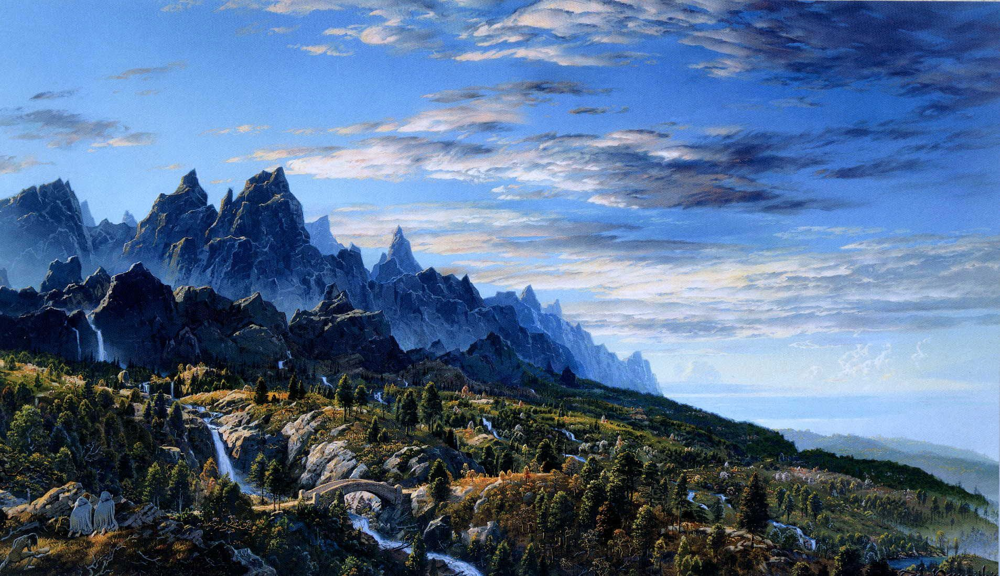

О Средиземье
Средизе́мье (англ. Middle-earth; Э́ндор (квенья Endor); Э́ннорат (синд. Ennorath); буквально — Среди́нная земля́) — континент, место действия в вымышленной вселенной легендариума Дж. Р. Р. Толкина. В Средиземье полностью разворачиваются события «Хоббита» и «Властелина колец» и частично — «Сильмариллиона» и «Неоконченных сказаний».
Толкин подготовил несколько карт Средиземья и отдельных его областей, где происходят события его произведений. Не все они были опубликованы при жизни. Основными картами были те, которые были опубликованы в «Хоббите», «Властелине колец», «Сильмариллионе» и «Неоконченных сказаниях». Большинство событий Первой Эпохи имело место на субконтиненте Белерианд, который в конце того периода ушёл под воду. Синие Горы на правом краю карты Белерианда — те же Синие Горы, которые появляются в левом верхнем углу карты Средиземья во Второй и Третьей эпохах. Карты Средиземья Толкина охватывают лишь небольшую часть мира: не показаны значительные части земель Руна и Харада, а также другие континенты.

Толкин не раз отмечал, что Средиземье находится на нашей Земле (точнее, «находилось» в далёком прошлом). Он говорил об этом и во «Властелине колец»[2], и в письмах[3]. По его словам, Третья Эпоха завершилась примерно шесть тысяч лет назад[4]. Окрестности Шира — нынешняя Северо-Западная Европа (Хоббитон, например, помещён на той же широте, что и Оксфорд)[5]. Впрочем, в ответах на некоторые письма он отзывался о своих историях как о «вторичной реальности» (англ. secondary or sub-creational reality, secondary belief)[6]. Когда его в интервью в январе 1971 года спросили, можно ли считать, что описанное им происходило в иную эпоху, он ответил: «Нет… на другом уровне воображения — да»[1][7]. Тем не менее он подтвердил, что действие происходит на Земле; сравнивая Мидгард и Средиземье, он сказал: «О да, это одно и то же слово. Большинство людей делают ошибку, полагая, что Средиземье — другой мир или другая планета, как в научной фантастике, но это просто старомодное слово, обозначающее мир, в котором мы живём и который представлялся окружённым Океаном». В конце 1971 года он снова подтвердил, что описанное им — «краткий эпизод в истории» Земли
География
Средиземье представляет собой обширный континент с продолжительной береговой линией на западе, постепенно уходящей к юго-востоку. Берега Средиземья омываются Великим Морем (океаном). На севере воды моря Белегаэр образуют замерзающий залив Форохел, ограждённый цепями Голубых гор, где располагалось государство гномов-изгнанников из Эребора, на юге — Белфалас, на берегах которого находится гондорский порт Пеларгир и могучий замок Дол-Амрот, ещё дальше к югу — Умбар, цитадель корсаров. В стране Линдон, на северо-западном побережье Средиземья, в заливе Лун стоит эльфийский город-порт Серые Гавани — единственное в Средиземье место, откуда корабли отправляются в Валинор. В Великое море впадают реки Изен (Ангрен), Брендивайн (Барандуин) и Андуин, а также множество более мелких рек.
Континент рассечён надвое хребтом под названием Мглистые горы, на севере которых находится крепость орков Гундабад. У западного подножия гор в долине Имладрис стоит эльфийский город-крепость Ривенделл. К западу от хребта расположены лесистые равнины Арнора и Эриадора (земли Серых следопытов), с которыми на юге граничит населённый хоббитами Шир, а на северо-востоке — территория бывшего королевства Ангмар. К востоку от хребта лежат торговые города Дэйл и Эсгарот на берегах Долгого озера, вотчина Бардингов, а также великое гномье царство Эребор, расположенное в пещерах Одинокой Горы. В южных отрогах Мглистых гор находится населённый энтами лес Фангорн, к северу от него — лес галадрим Лотлориен — владение Галадриэли, а к юго-западу — Изенгард, цитадель Сарумана.